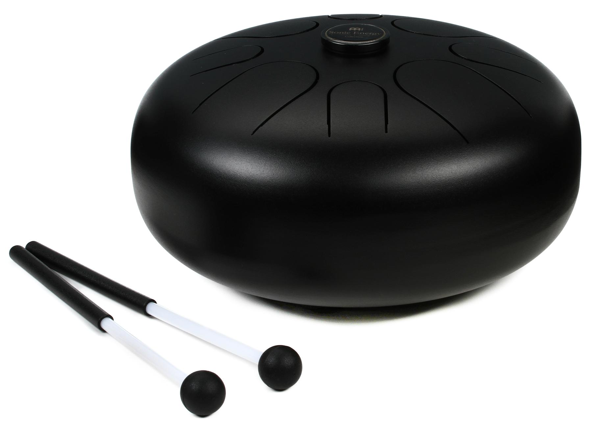

Here you will see what i play and the kind of music that i enjoy! First lets talk about the insrtuments i can play. Lets go over the main instruments i can play that you know about which includes singing, acoustic guitar, some piano, and harmonica. now for the 2 you may not know steel tung drum and kalimba
